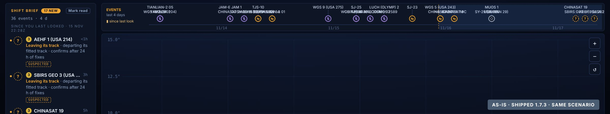
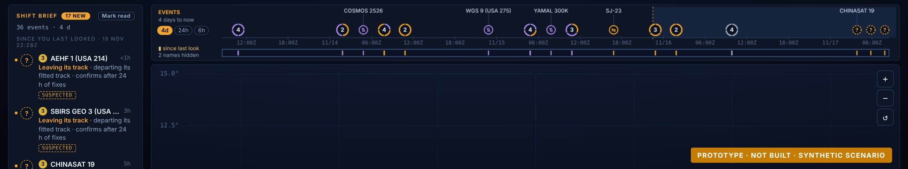

The decision in one line
Turn the timeline into a zoomable, pannable window on the four days, with an overview strip beneath it, count bubbles where events share a moment, and a list behind every bubble, so every event is always one click from its name.
What you do
Scroll over the strip to zoom, drag to pan, or press 24h or 6h. Click a numbered bubble to list what is inside it, click a name to focus it. Double-click to go back to four days.
What PSIRENS does
Merges glyphs that would touch into one bubble carrying the count and a ring coloured by event type. Places names only where they fit, and says how many it could not place.
What it unlocks
A busy hour reads as "five N-S manoeuvres at 10:49Z" instead of a smudge. You can see the whole four days and any single hour of it without leaving the plot.
The problem
The strip is 1.7.0's: fixed at four days, one glyph per event, names drawn in two rows above. That holds up for a handful of events. It does not hold up for the belt you are looking at.
- Glyphs land on the same pixels. Four days across about 1,450 pixels is roughly four minutes a pixel. Any two events closer than about an hour overlap, and identical times stack perfectly, so a pile of five looks like one.
- Names overprint. The label pass has two rows and no way to give up, so the third name in a crowd is drawn over the first two and none can be read.
- Nothing can be steered. No zoom, no pan, no shorter span. The only way to see what is inside a knot is to step through the whole brief with
j.
Drag the slider: the shipped 1.7.3 strip on the right, the prototype on the left. Same scenario, same 35 events in the window, same clip.


PROTOTYPEAS-IS 1.7.3The finding that shaped the design
The obvious fix is "let me zoom in". Building that first showed it is not enough on its own.
FACT The detector tests candidate splits every three hours from a start of ref − 96 h (events.py lines 163 and 206), and an event is stamped with its winning split. Every object shares that grid. Two objects that manoeuvre in the same three-hour slot therefore get the same epoch to the second, and no zoom, however deep, will separate glyphs drawn at the same time.
INFERENCE Your screenshot's stacks are at least partly this, not only density. I cannot confirm it from a picture; the /api/events export asked for below would settle it.
Whether the detector should place E-W events more finely than its grid is a separate question with a separate cost (it changes what the evidence block reports). It is listed as decision 5 and is not part of this change.
Try it: the prototype, running here
This is the prototype's own timeline code, copied in unchanged, fed the 38 scenario events. Event times are stored as ages, so the strip is current whenever you open this page. The since last look mark sits 34 hours back, as in the figures.
Six things to try
- Scroll over the strip to zoom in
- Drag the strip sideways, or drag the box in the overview
- Click a numbered bubble to list what is inside
- Click a name in that list to focus it: it leaves the bubble and is ringed
- Press 24h, then 6h
- Double-click the strip to return to four days
On a phone or tablet the span buttons and taps work; scroll-zoom and drag are mouse only in the prototype. The build adds touch, see Build plan.
Walkthrough
Captured from the real 1.7.3 interface with the prototype applied as an uncommitted patch, driven by real mouse and wheel events. Each figure carries a banner saying what it is. Click a numbered marker or step through. Click the image for full size.
What this does not prove
- INFERENCE The density is built to resemble your screenshot, not measured from it. The scenario plants 38 events with knots on day two and late on day three, then runs the real detector over them. Names, countries and ranks are the real HRR list; the orbital geometry is synthesised, because this machine has no feed access.
- Mouse only. The prototype handles wheel, drag, hover and click. Touch, pen and keyboard steering of the strip are build work, listed below.
- One rough edge, found and left visible. With a bubble's list open,
Esccloses the list and also leaves focus mode, because both handlers hear the key. The build closes the innermost thing first. - The strip is 26 pixels taller (74 to 100) to fit the overview, and the plot gives that up. Decision 3 offers the shorter strip without the overview.
- Gate status is in Build plan, measured on the working copy, not assumed.
How it would be built
About 180 lines of the SPA change, all inside the timeline block; no server change, no API change. The patch is prototype/timeline.patch.
On top of the prototype
- Pointer events, so touch and pen drag the strip, and pinch zooms it.
- The strip becomes focusable:
←→pan,+−zoom,0resets. Bubble lists are buttons, so a list is fully keyboard driven. Esccloses the innermost layer first: the list, then focus mode.- The bubble's list states the time resolution, "one 3-hour slot", so a shared timestamp is never read as a coordinated burn.
Guards, each with a red case
| Guard in the layout probe | Red case that must fail it |
|---|---|
| A real wheel event over the strip shortens the span | Invert the zoom guard |
| Zooming at the newest end keeps the newest event in view | Remove the live edge (the prototype's first version had exactly this bug: the newest event slid off the right) |
| A bubble's list has as many rows as its count | Truncate the list to one row |
| A focused event is never inside a bubble | Drop the lift-out |
| The hidden-name count is non-zero at four days and zero when zoomed into a quiet hour | Make every name "fit" |
| 24h, 6h and double-click set the span they say | Swap two preset values |
The canvas already publishes its state in dataset (span, glyphs, bubbles, names hidden, pinned to now), which is how the probe reads pixels it cannot inspect, as it does for the co-planar chart.
Gate status of the working copy, measured today
FACT First run of simulate-pipeline.sh over the working copy: the SPA lint gate rejected it with three sonarjs/no-nested-conditional findings in the new code, which Code Quality would have raised on upload. Extracted into tlSpanText and tlCursor. Second run: SIMULATION GREEN, 267 tests passed, 95% coverage, sniff check clean, layout probe OK, including its existing check that clicking a timeline glyph focuses the event. Not yet covered: the six guards above do not exist yet. They are build work.
Also in the change
- Operator Guide: the timeline section rewritten, the two figures recaptured, three reference-card rows, one self-check question.
- Version 1.7.4 in both places; QUALITY-LEDGER and CLAUDE.md updated.
What I need from you
/api/events?view=real&ranks=1,2,3,4,5 on the deployed PSIRENS, save the JSON and send it over. It does three jobs at once.- It confirms or refutes the shared-timestamp inference above on real data.
- It is the threshold calibration the 1.7.0 entry left open. Your screenshot suggests about 40 events in four days, many of them N-S. INFERENCE That is more than a quiet belt should produce, and the N-S floor (0.008°) is the first suspect.
- It lets me rerun these figures on the real distribution rather than a built one.
The payload carries names, ranks, countries and event numbers. Handle it at the marking the app shows.
Your decisions
Pick an answer for each. The page writes the reply for you to paste back. Nothing is sent anywhere.
Reproducing this
Everything is in prototype/ beside this page. From the repository root with the project venv:
python prototype/dense_scenario.py . <store-dir> # plant 38 events, run the real detector DATA_DIR=<store-dir> UDL_BASE_URL=http://127.0.0.1:1/ SCHEDULER_ENABLED=0 UVICORN_PORT=8301 \ PYTHONPATH=src uvicorn psirens.main:app node prototype/capture_asis.js http://127.0.0.1:8301/ figures # shipped 1.7.3 git apply prototype/timeline.patch node prototype/capture.js http://127.0.0.1:8301/ figures # the prototype, every state python prototype/splice.py . # refresh the demo code and events in this page